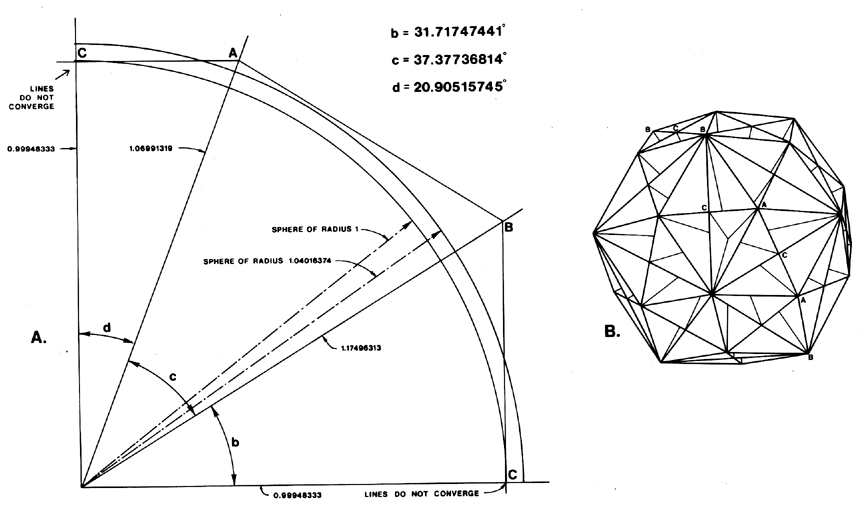

Fig. 986.504 Profile of Quadrants of Sphere and Rhombic Triacontahedron: Central angles and ratios of radii are indicated at A. Orientation of modules in spherical assembly is indicated by letters at B.
Copyright © 1997 Estate of R. Buckminster Fuller